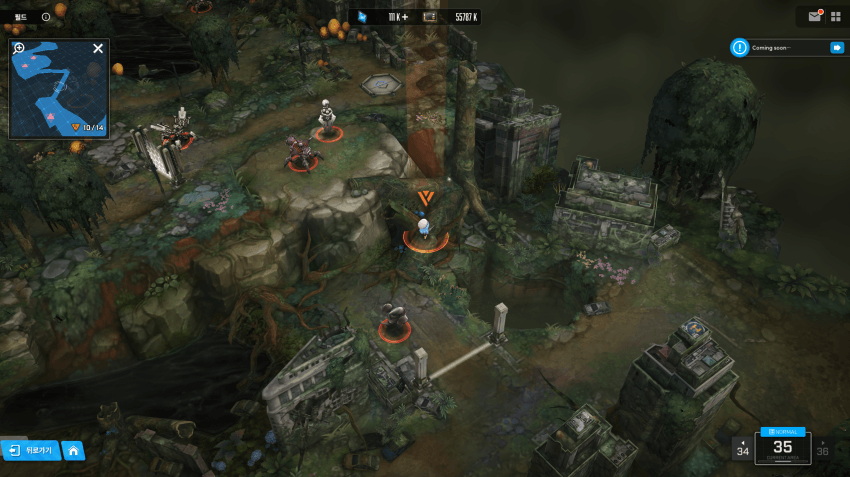

5명인 파티로 모서리 비비다보면 스테이지 들어가면서 순간적으로 파티가 위에 낌 (취소하면 아래로 내려오는거 볼 수 있음)
이 상태로 스테이지 들어갔다가 전투포기 하고 나오면 꽉 껴서 위쪽 눌러도 네비게이션(이동경로) 안나옴
이 때 그냥 위쪽 광클해도 올라가진다는데 파티 한명으로 바꾸고 하면 몇번 안눌러도 올라가지더라
나처럼 여기서 몇시간 박고 애들 강화해주고 난리를 칠 누군가가 보기를 바랄게...
원본: https://gall.dcinside.com/mgallery/board/view?id=gov&no=5855099
백업 시각:

5명인 파티로 모서리 비비다보면 스테이지 들어가면서 순간적으로 파티가 위에 낌 (취소하면 아래로 내려오는거 볼 수 있음)
이 상태로 스테이지 들어갔다가 전투포기 하고 나오면 꽉 껴서 위쪽 눌러도 네비게이션(이동경로) 안나옴
이 때 그냥 위쪽 광클해도 올라가진다는데 파티 한명으로 바꾸고 하면 몇번 안눌러도 올라가지더라
나처럼 여기서 몇시간 박고 애들 강화해주고 난리를 칠 누군가가 보기를 바랄게...